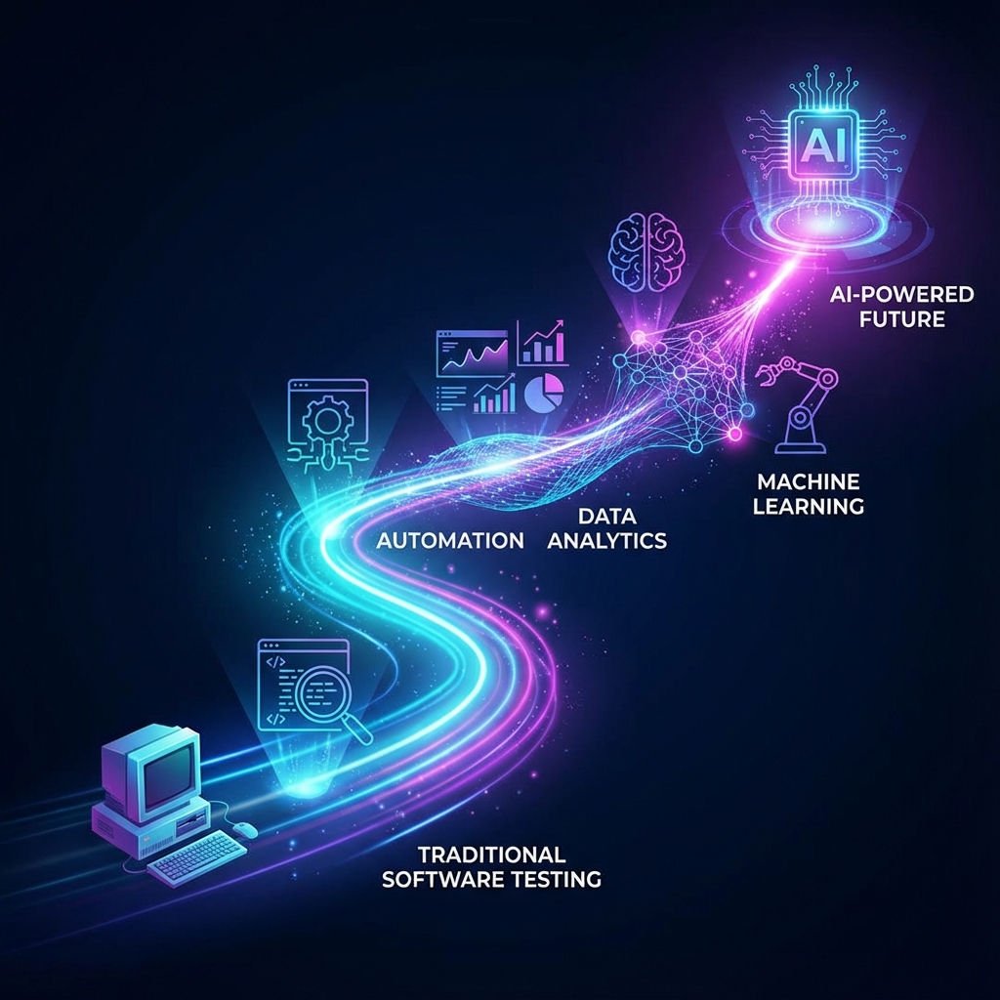

Intro
I am an experienced Test Analyst transitioning into AI Automation Engineering. With
over 10 years of experience in Software Testing, SDLC, and Team Management, I now specialize in
building autonomous multi-agent systems that revolutionize how we approach quality assurance.
My background includes robust skills in SQL, Python, Tableau, and
Selenium. I am passionate about leveraging Generative AI to create self-healing,
intelligent automation frameworks.
Projects
🤖 Autonomous Testing Agent
A cutting-edge Multi-Agent System powered by CrewAI. It autonomously analyzes
webpages, generates test scenarios, writes self-healing Selenium code, and executes tests with
detailed visual reporting.
Tech Stack: Python, CrewAI, Selenium, Pytest
AI Agent Portfolio (CrewAI)
Advanced portfolio generation system orchestrated by CrewAI agents to automate content creation and
layout.
Tech Stack: CrewAI, Python, Agents
Image Stream Vision
Computer vision application for real-time image streaming and processing analysis.
Tech Stack: Computer Vision, Python, AI
AI Agent Portfolio
Intelligent portfolio showcase powered by AI agents, demonstrating autonomous web development
capabilities.
Tech Stack: AI Agents, Web Dev
Covid-19 Data Exploration
In-depth analysis of Coronavirus death percentages and infection rates using advanced SQL queries and
time series analysis.
Tech Stack: SQL, Data Analysis
Covid-19 Tableau Dashboard
Interactive dashboard visualizing global pandemic trends, offering detailed insights into infection
spreads and recovery rates.
Tech Stack: Tableau, Visualization
Uber Trip Analysis
Exploratory Data Analysis (EDA) of Uber trip data using Python to uncover patterns in driver behavior
and trip density.
Tech Stack: Python, Pandas, Jupyter
About

With over a decade of experience in software testing and quality assurance, I've evolved my career to
focus on the cutting edge of AI automation. My journey from traditional test analysis to AI-powered
automation engineering represents the future of software quality assurance.
Core Competencies:
- AI & Machine Learning Integration
- Multi-Agent Systems (CrewAI)
- Test Automation (Selenium, Pytest)
- Data Analysis (SQL, Python, Tableau)
- SDLC & Team Management
Contact
Interested in collaborating on AI or Automation projects? Let's connect!